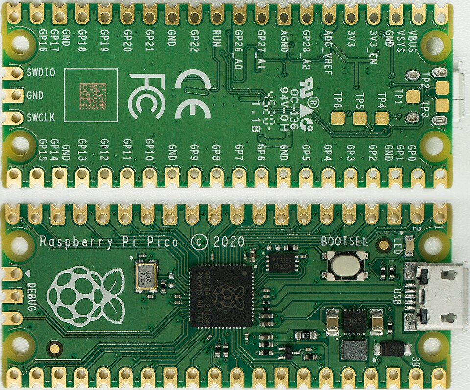

Guess the light order
Watch three flashes. Type a guess and check it with Python.
Open Lesson 8 →Tech for Change
Python · Wokwi Pico
Watch three flashes. Type a guess and check it with Python.
Open Lesson 8 →
Finish the traffic-light cycle. Early finishers can add a timed pedestrian crossing.
Open Lesson 7 →Continue from your last working code. Build up to three lights, one step at a time.
Continue Lesson 6 →Explore how a small image stores and communicates information.
Open project →Use Python lists to check bookings and find a ticket.
Open project →